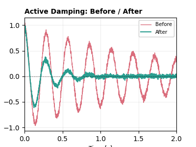

ケーススタディ#
複数の GWexpy 機能を組み合わせ、自分のデータに応用できる完結した実例解析にまとめた、目的志向のワークフローです。機能ごとのレッスンは、まず チュートリアル と 技法レシピ から始めてください。
注目#

ノイズバジェット
BrUCo 方式のバジェットで、対象スペクトルを実測された寄与に分解します。
伝達関数
コヒーレントな加振から多チャンネル伝達関数を推定しプロットします。

アクティブ制振
6自由度防振系のための MIMO アクティブ制振ループを設計・検証します。
I. 較正・応答・制御#
II. 相互運用・入出力・再現性#
III. 統計・機械学習ワークフロー#
IV. ノイズ探索と検出器診断#
注釈
上の注目ケーススタディにはサムネイルを表示しています。残りのギャラリーは、CI で実行済みノートブックのサムネイルが生成されるまではリンクとして掲載します。